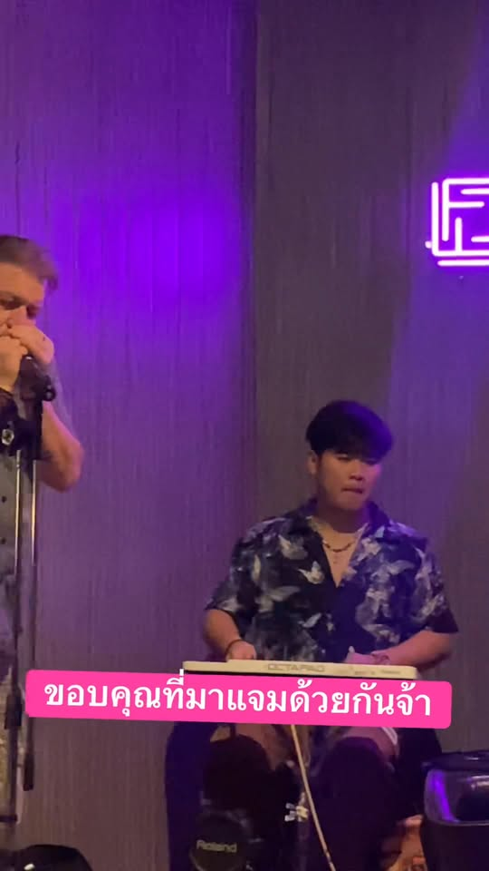

All-day dining
Breakfast, lunch, and dinner — open daily from morning until late.

ยินดีต้อนรับสู่ Fortune Bistro
Udon Thani · Prajak Silapakom Road
A warm neighbourhood bistro for breakfast, lunch, and dinner — outdoor seating, drinks, and evenings with music.
Why visit
Come for Thai classics and European favourites, stay for coffee, cold drinks, and the relaxed bistro atmosphere.
Breakfast, lunch, and dinner — open daily from morning until late.
Comfort food from both kitchens — pasta, pizza, steaks, Thai dishes, and more.
Coffee through the day, beers and cocktails when the evening gets going.
Evenings with performers and a welcoming crowd — check Facebook for what’s on.
Atmosphere
Food, friends, neon glow, and live sets — a neighbourhood spot with energy.



Find us
Right on ถนนประจักษ์ศิลปาคม in Udon Thani city — easy to reach for lunch, dinner, or a late drink.
Hours can vary with events. We’re open daily from morning until late — confirm on Facebook or by phone before you visit.